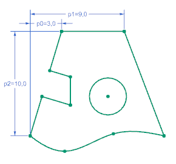

Display Sketch Constraints
Display Sketch Constraints
What is it?
There is now a single option to turn the display of geometric constraints on and off. The new Display Sketch Constraints option replaces both the Show All Constraints and Show No Constraints commands.
|
 |
|

Where do I find it?
|
Toolbar |
(Modeling) Direct Sketch→Display Sketch Constraints (Drafting and Sketch task environment) Sketch Tools→Display Sketch Constraints |
|
Menu |
Tools→Sketch Constraints→Display Sketch Constraints |